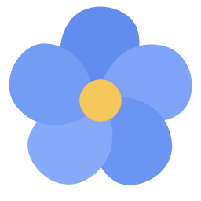

Selected combination: 160 ms opening, 100 ms closing, and 60 ms color transitions. No sliding, zooming, or bounce.
B · Balanced · actual speed

Input schema
Try Close, then Open Input schema. Hover across keycaps to compare the faster color response. Clicking a keycap simulates recording; Reset restores defaults.